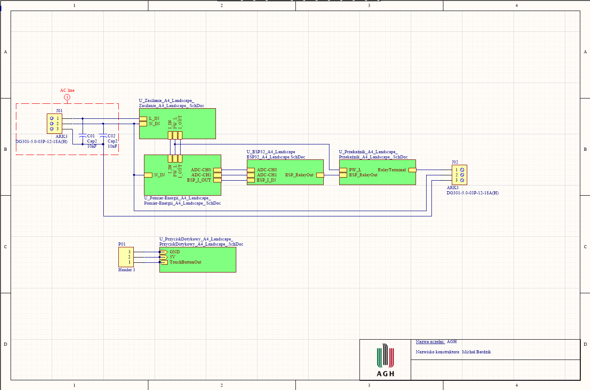

The aim of this project was to design a device for external control 230V devices. It was done by operating the relay using ESP32 microprocessor. In addition, the module allows to measure energy consumption and handling a touch button for manual control of switching on and off the external device. It was necessary to design a power supply and energy measurement system, the operation of the relay and the microprocessor itself.
The whole system consists of four main systems and one additional system which is detached from the whole. Going from the left we have the first connector, which is responsible for to supply 230V to the system. We have got a protection line here right away by using Y type anti-interference capacitors. Then we have the power system, energy measurement, microcontroller and relay, which is responsible for providing voltage to the output connector to which you connect the external device. The last one is a touch button, which can be used to manually turn the device on/off.
The device was designed on the basis of many similar plates of others producers. The board has two high-voltage connectors and one to connect an external button. In addition, the pads for programming, and to connect the ESP8266 microprocessor instead of ESP32. The design of the device should enable safe operation inside buildings. The target device is intended to be connected and hidden in an electrical box, but after it has been placed in a suitable housing, the device can be used outside the box, by bringing to it the right pair of cables.